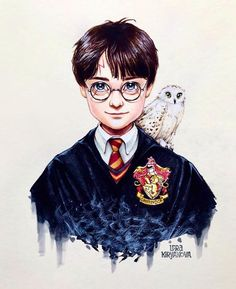

Harry James Potter nasceu em Godric's Hollow em 31 de julho de 1980, mais conhecido como Harry Potter. Ele é um bruxo, filho único de Tiago Potter e Lílian Evans Potter, considerado um dos mais famosos bruxos dos tempos modernos e o aluno mais famoso da Escola de Magia e Bruxaria de Hogwarts.
Ver mais